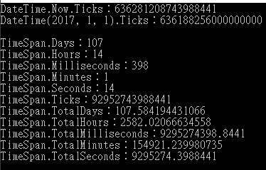

一、DateTime 結構
using System;
namespace ConsoleApp1
{
class Program
{
static void Main(string[] args)
{
for (int i = 0; i < 1; i++)
{
Console.WriteLine("DateTime.Now： " + DateTime.Now.ToString());
Console.WriteLine("DateTime.Today： " + DateTime.Today.ToString());
Console.WriteLine("DateTime.UtcNow： " + DateTime.UtcNow.ToString());
Console.WriteLine();
Console.WriteLine("DateTime.Now.Date： " + DateTime.Now.Date.ToString());
Console.WriteLine("DateTime.Now.Day： " + DateTime.Now.Day.ToString());
Console.WriteLine("DateTime.Now.DayOfWeek： " + DateTime.Now.DayOfWeek.ToString());
Console.WriteLine("DateTime.Now.DayOfYear： " + DateTime.Now.DayOfYear.ToString());
Console.WriteLine("DateTime.Now.Hour： " + DateTime.Now.Hour.ToString());
Console.WriteLine("DateTime.Now.Kind： " + DateTime.Now.Kind.ToString());
Console.WriteLine("DateTime.Now.Millisecond： " + DateTime.Now.Millisecond.ToString());
Console.WriteLine("DateTime.Now.Minute： " + DateTime.Now.Minute.ToString());
Console.WriteLine("DateTime.Now.Month： " + DateTime.Now.Month.ToString());
Console.WriteLine("DateTime.Now.Second： " + DateTime.Now.Second.ToString());
Console.WriteLine("DateTime.Now.Ticks： " + DateTime.Now.Ticks.ToString());
Console.WriteLine("DateTime.Now.TimeOfDay： " + DateTime.Now.TimeOfDay.ToString());
Console.WriteLine("DateTime.Now.Year： " + DateTime.Now.Year.ToString());
Console.ReadLine();
}
Console.ReadLine();
}
}
}
執行結果
說明：
範例為現在時間為2017/4/18 下午 12點 49分 9.3786748秒
1、DayOfYear屬性代表該日期為一年中的第幾天
2、Millisecond屬性表示378毫秒
3、Ticks屬性的值代表 0001 年 1 月 1 日的 12:00:00 午夜以來總共過了多少的 100 奈秒間隔數
二、TimeSpan 結構
舉一個例子，想要比較現在日期時間(2017/4/18)與2017/01/01 上午 0點0分0秒 是差多少？差在哪裡？
using System;
namespace ConsoleApp1
{
class Program
{
static void Main(string[] args)
{
long now = DateTime.Now.Ticks;
long _20170101 = new DateTime(2017, 1, 1).Ticks;
TimeSpan TimeSpan = new TimeSpan(now - _20170101);
Console.WriteLine("DateTime.Now.Ticks：" + now);
Console.WriteLine("DateTime(2017, 1, 1).Ticks：" + _20170101);
Console.WriteLine();
Console.WriteLine("TimeSpan.Days：" + TimeSpan.Days);
Console.WriteLine("TimeSpan.Hours：" + TimeSpan.Hours);
Console.WriteLine("TimeSpan.Milliseconds：" + TimeSpan.Milliseconds);
Console.WriteLine("TimeSpan.Minutes：" + TimeSpan.Minutes);
Console.WriteLine("TimeSpan.Seconds：" + TimeSpan.Seconds);
Console.WriteLine("TimeSpan.Ticks：" + TimeSpan.Ticks);
Console.WriteLine("TimeSpan.TotalDays：" + TimeSpan.TotalDays);
Console.WriteLine("TimeSpan.TotalHours：" + TimeSpan.TotalHours);
Console.WriteLine("TimeSpan.TotalMilliseconds：" + TimeSpan.TotalMilliseconds);
Console.WriteLine("TimeSpan.TotalMinutes：" + TimeSpan.TotalMinutes);
Console.WriteLine("TimeSpan.TotalSeconds：" + TimeSpan.TotalSeconds);
Console.ReadLine();
}
}
}
執行結果

說明：
1、Days屬性表示兩者差了107天
2、Hours屬性為不看天數部份只看時數，則表示兩者差了14小時
3、Millisecond、Minutes、Second屬性也是跟Hours屬性相似，
分別只看毫秒數、分鐘數、秒數部份。
4、Ticks屬性表示包含計算了Days、Hours、Millisecond、Minutes、Second屬性，
兩者共差了多少個100奈秒。
5、TotalDays屬性為兩者共差以天為單位來表示
6、TotalHours、TotalMilliseconds、TotalMinutes、TotalSeconds屬性，
也跟TotalDays屬性相似，表示兩者共差分別以小時、毫秒、分鐘、秒為單位來表示。
參考資料：